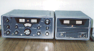
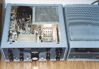

| Hallicrafters ＳＲ-２０００ Hurricane |
ハリクラフターズ社
戦前からの高名な無線機（受信機）メーカーでした
社歴としては、１９３３年～１９７５年の約４０年間だったようです
ここにご紹介のＳＲ-２０００は、社歴の中でほぼ最後の時期に販売されていたトランシーバです
ＦＰＭ-３００というＦＴ－１０１ライクな構成のトランシーバが、ハリクラフターズ社にとって、最後のハム用トランシーバだったかと思います（１９７２年～１９７４年にかけて販売 ＄６２５）
 |
ＦＰＭ-３００
ＦＴ－１０１風（意識したと思われます／ＦＴ-１０１は、１９７０年の発売）に、ＡＣ／ＤＣ電源を内蔵した、コンパクト・モデル
実際は、ＩＦ：９ＭＨｚ シングル・コンバージョン・タイプ（ＦＴ-２０１ライク）です
ファイナル６ＫＤ６シングル（１００Ｗ出力！２５０ＷＰＥＰと）、ドライバ１２ＢＹ７Ａ その他は、半導体を採用というものです |
さて、このＳＲ-２０００ですが、１９６５年～１９７２年にかけて販売された管球式のトランシーバで、１９６７年の価格は、＄１,０９５でした（同じ頃、Ｃｏｌｌｉｎｓ ＫＷＭ-２は、＄１，１５０）
当時、ＴＯＹＯＴＡパブリカ・・・トヨタの歴史の中で唯一の空冷水平対向型エンジン（２気筒８００ｃｃ）を搭載した大衆向け小型車が１０００ドル・カーと広告されていました（３５．９万円 ＄１＝￥３６０固定レートの時代）
国民車「カローラ」登場より前の時代です（元祖国民車かも／パブリカ：発売は１９６１年で、その当時３８．９万円）
当時、トヨタ店・トヨペット店に続く、第３の販売チャネルとして出来た「パブリカ店」は、後に「カローラ店」と名前を変えました
日本がそんな時代にＵＳで生まれ、ちょうど、この車と同じくらいの価格が付いたトランシーバです |
 |
 |
この、ＳＲ-２０００は、当時ニックネームで「ハリケーン」と呼ばれていました
ひとつ下のパワーを持つＳＲ-４００（６ＨＦ５ ｘ２ほか、バージョンによる）は、サイクロンと・・・ＳＷＡＮ同様、型式の数字は、おおよその入力パワーかと思われます
たぶんですが、本機は一般市販品としては最高の出力（１ＫＷＰＥＰ）をもつ、ＨＦトランシーバでしょう
ＳＲ-２０００のファイナル電圧は、なんと２８００Ｖです（８１２２／セラミック管パラレル）
１９６０年代後半の生まれですが、ちゃんと完動します
ＵＳから持ち帰ってこられた方からＱＳＹしてもらって、頑張ってリストア／リメイクしました
私の思い出ですが、ＤＸに目覚めた頃（１９６９年頃）、ヨルダンのフセイン国王（ＪＹ１：お亡くなりになりました）が、このマシンを使ってオンエアされていたことを今でも覚えています（ＷａｔｃｈのみでＱＳＯには至らなかった、残念！）
ＳＸ-１１７との組み合わせ・・・トランシーバー＋受信機というのが使いやすかったですね（言うほどオンエアしていません、レストア最中はオンエアしてましたが、できあがるとやめてしまう悪い持病の持ち主なもので・・・） |
 |
ＳＲ-２０００の上ブタを開けてみると・・・・
アメリカ製品はシャーシからキャビネットまで全てアルミが採用されていて、５０年以上たった今でも大変きれいですし、高周波的にも安定です
２ＫＷ入力のファイナル・・・セラミックチューブ・パラレルの強制空冷のためのブロアが見えます（奥の黒い塊！）
ＶＦＯの安定度では、ＳＸ－１１７に負けていましたが（多分、筐体内の温度変化が大きいため）、このマシンだけは、なぜか？手元に残しています（半分分解されたまま、廊下の片隅に置かれ、埃をかぶっています） |
|
余談
その昔、入手した当時には使用できるところまで手を入れていた・・・ＶＦＯ安定度の確保で言わば諦めた状態（当時は、Ｘ-Ｌｏｃｋ等無かった！）
近々、Ｘ-Ｌｏｃｋ組み込みほかによる「現役復帰」を目指します
|
|
余談Ⅱ
高名なのは、ＳＲ-１５０、ＳＲ-４００（Ａ）あたりかと思われます
ＳＲシリーズの基本設計について
■３．５～１４ＭＨｚ帯３バンド・マシン（ＳＲ-１６０／５００）
ＩＦ：５２００ＫＨｚ ８．７～９．２ＭＨｚのＶＦＯを組み合わせたシングル・コンバージョン・タイプ（７ＭＨｚについてはプリＭｉｘで対応）
受信は、一般的なＲＦ１段、ＩＦ２段構成です
■３．５～２８ＭＨｚ帯５バンド・マシン（ＳＲ-１５０／４００（Ａ）／２０００）
ＩＦ：１６５０ＫＨｚ ４３５０～４８５０ＫＨｚのＶＦＯを組み合わせた、コリンズ・タイプのダブル・コンバージョン
受信は、ＲＦ1段 ＩＦ３段構成（１ｓｔＩＦ：６．０～６．５ＭＨｚ１段、２ｎｄＩＦ：１６５０ＫＨｚ２段）､ちょっと気になるのは、フィルタの位置が２ｎｄＩＦ増幅段の間に入っていること・・・混信除去の観点からは､２ｎｄＩＦの先頭に入って欲しいという気はしますが、なにかメリットがあってこのような設計になっているのでしょう（多分ですが、ノイズブランカの都合／狭帯域にしたくない事情から・・・ＳＲ-１５０には、ＮＢは内蔵されていませんが！？）
共通
ＡＧＣ／ＡＬＣともに増幅型を採用、その他は特記するような特徴はない一般的な設計かと思われます（ＲＩＴは、早い時期の製品から内蔵、後期ではＮＢを内蔵）
各シリーズにおいて、送信パワーの違いはあっても、構成そのものの基本は同じようです（細かい点はともかく、送信ファイナル部が異なるだけ？） |
| 2015.01 ＪＡ４ＦＵＱ |
|